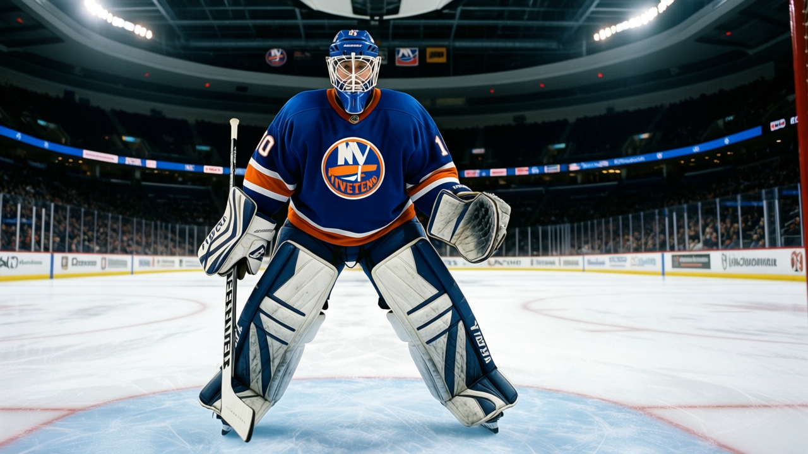
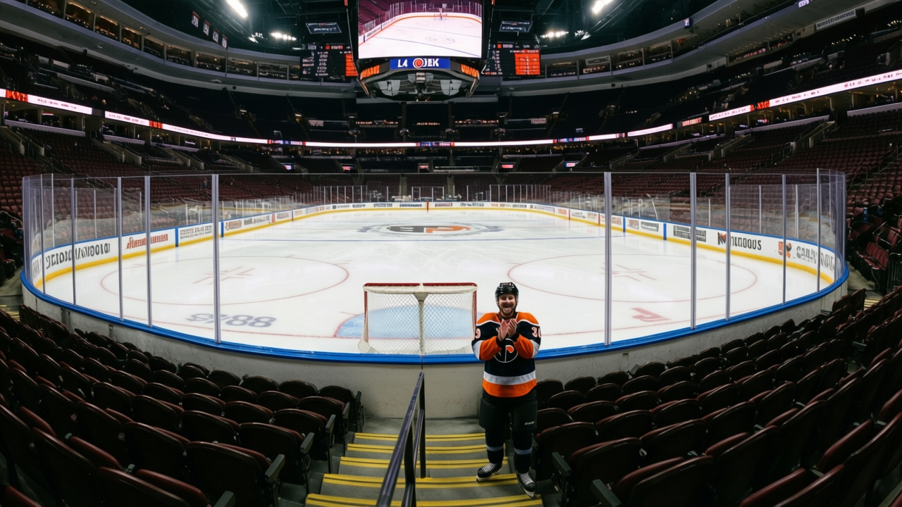

87.5 AND CHECKED OUT: The Islanders Are Making $16.87 Million Off a Room That Hates It
Third-worst morale in hockey, 40 goals against in 10 games, $53.57M payroll. The building prints money. The product is rotten.
 Mickey "The Mick" DonnellyColumnist, ex-goalie · The Penalty Box
Mickey "The Mick" DonnellyColumnist, ex-goalie · The Penalty Box
 New York Islanders have 40 points, the 3rd-worst room in hockey at 87.5, and $16.87 million in profit. You want a picture of what comfortable mediocrity looks like? There it is. A locker room that knows it's bad, a front office that knows it doesn't matter, and 13,051 seats at $79 a pop that keep the lights on.
New York Islanders have 40 points, the 3rd-worst room in hockey at 87.5, and $16.87 million in profit. You want a picture of what comfortable mediocrity looks like? There it is. A locker room that knows it's bad, a front office that knows it doesn't matter, and 13,051 seats at $79 a pop that keep the lights on.
The last 10 games are the crime scene. 27 goals for, 40 against. Three wins, seven losses. The Islanders went from 12-11 at home to whatever they're doing now, which is losing in front of people who paid $79 to watch a 77-rated goaltender play 48.7 minutes a night.  Garth Snow79 has 74 morale. He's not the problem. He's the symptom.
Garth Snow79 has 74 morale. He's not the problem. He's the symptom.
The Room Is 87.5 and Falling
Ottawa sits at 85.8, the worst in the league. Columbus at 87.2. New York at 87.5. Three rooms that know exactly where they are in the standings and feel nothing about it. That's not resilience. That's resignation.
The payroll says $53.57 million. The points say 40. That's $1.34 million per point, 10th-worst in the league. They spend like a team that should sit 4th in this division. They play like one fighting Columbus for the distinction of being the least fun franchise in the Atlantic.
 Steve Halko65 sat on the Development Index at -3 with a 63 overall. That's the kind of depth you're asking to fill minutes when your room is checked out. The coach asks a 63 to hold a blue line, the 63 gets beat, Snow watches 40 pucks go in over 10 games, and nobody in the front office blinks because the ledger says green.
Steve Halko65 sat on the Development Index at -3 with a 63 overall. That's the kind of depth you're asking to fill minutes when your room is checked out. The coach asks a 63 to hold a blue line, the 63 gets beat, Snow watches 40 pucks go in over 10 games, and nobody in the front office blinks because the ledger says green.
The Money Is the Point
$50.53 million in revenue against $53.57 in payroll, and they still turn $16.87 million in profit. How? I don't know, and I don't care. That's above my pay grade. What I care about is that $16.87 million in profit buys you exactly what this team has bought: a building you can fill on a Tuesday night without anyone expecting to see something they'll remember.
The ticket costs $79. You get 13,051 people for that. In a 30-team league, that's the 24th-highest attendance. You're paying $79 to sit in a building that's less than half what Toronto draws. The product justifies exactly that much interest and no more.

Nobody Fires Nobody
Here's the thing about a profitable bad team. Nobody's career is in jeopardy. The GM isn't going to get the phone call. The coach isn't going to get the extension clause triggered. The guys in the room get $53.57 million to sit at 87.5 morale and go 3-7 in 10, and everyone walks into the building the next morning like nothing happened.
That's the Islanders' problem in two sentences: they're making too much money to be angry and playing too badly to be proud. The room splits the difference at 87.5 and calls it a night.
I want a coach who gets a 74 from his backup goalie and puts the starting job up for grabs. I want a GM who looks at $1.34 million per point and finds a trade by February 15. I want someone in that building to feel something other than the comfort of a quarterly profit report. Nobody does. The 13,051 keep coming. The 40 goals against keep happening. The $16.87 million keeps landing.
The room is gone. The cash register isn't.